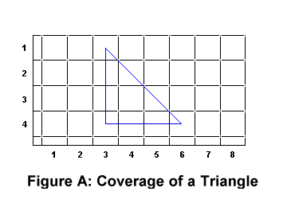

Now that you know how the library works, it's time to start using it.
Blitting is conceptually easy. You make a copy of an image (or part of an image) in another place. You do it really fast. This is what allows you to draw a mouse cursor, or characters of a font, or just about anything you see in a graphical user environment. There's a caveat to a general blitting function: the widths of the source and destination images aren't usually the same. Let's see an example with drawing a letter on the screen, as this is what you'll be doing in this MP. Here's the image of a section of the font file, with the 'A' being the character we will draw to the screen. The entire font file has 128 characters, and each character is 16 pixels wide and 16 pixels high.
Once we find the offset corresponding to the upper-left pixel of the source character and the offset for the upper-left pixel of the destination, we'll be good to go. A character's initial offset in the font image is dependent on its ASCII value, the size of the character, and the number of bytes needed for each pixel. Take the letter 'A' in this example. Its offset in the font image is 4160 decimal, and here's how to get that number:
Thus, 65 * 16 pixels * 4 bytes / pixel = 4160 bytes. You'll also need to calculate the initial offset of the destination (x,y) pixel. For that you'll need the width of the destination, the (x,y) values, and the number of bytes per pixel. It's up to you to come up with the formula on this one.
Now all you need to know is how many rows and columns to copy, and this will vary with each image (in our example they're both 16). For each of the NumRows rows, you'll copy NumColumns pixels out of the source image and place them in the destination image, moving right after each one. When you draw NumColumns pixels in the current row of the source image, you'll have to move down to the next row in both the source and destination images, keeping in mind that you'll also have to return to the original columns in both images. Again, you'll need the widths (in bytes - remember 4 bytes per pixel!) of the source and destination images to move down to the next row properly. Do this for each character in your string, and voilà, you have a string of text on the screen.
There are two parts to the idea of alpha blending - the alpha part and the blending part (ingenious I know). First we'll cover alpha opacity, then we'll learn how to use this to combine images on the screen.
A lot of people think of transparency when they hear the word "alpha" in the context of graphics. They're right, sort of. Alpha really refers to the opacity of a pixel, which is derived generally from the coverage of a pixel.
What is meant by the coverage of a pixel? Let's say you're drawing a triangle. The bottom and the left of the triangle are horizontal and vertical, respectively. The remaining side is at 45°. Now fill this triangle with a blue color. Now draw it to the screen. The outline, zoomed in, is shown in Figure A.
Where are the 45° pixels? For that matter, if all these lines
go through the centers of pixels, chances are the left and bottom and
upper-right include a lot of half-covered pixels; the lower-left corner has a
one-quarter covered pixel and the two remaining corners have about a one-eighth
covered pixel, as visualized in Figure A.
So how do you turn this into actual pixels? The simplest way, and the way we're using, is called the over operation. To draw color A with coverage α over color B, the resulting color C is calculated as follows:
Cr = (αr * Ar) + ((1-αr)
* Br)
Cg = (αg * Ag) + ((1-αg) *
Bg)
Cb = (αb * Ab) + ((1-αb) *
Bb)
Or more succinctly, as we only have one α, apply this to each channel
independently:
C = (α * A) + ((1-α) * B)
C = (α * A) + B - α * B
When we apply this to the case as listed above, with coverage values one,
one-half, one-quarter, and one-eighth, we get something that looks like Figure
B, only not quite so zoomed in, and no grid.
Things like this are where alpha opacity values originally come from. Don't
worry about how to calculate the alpha value, as the font image comes with an
alpha value for you. Concentrate on how to apply it using the over operator.
Here's how the value for the lower-left corner pixel was calculated, assuming a white background (B) upon which you draw a pure blue pixel with 25% coverage:
Notice that the pixels in the font file are all black, with some of them being darker than others. The lighter pixels have alpha values closer to zero that distinguish them as such (0h is no coverage, while FFh is total coverage).
Wait... all the pixels are black? How will we be able to see the characters on a black background? Can we get text of different color? Yes you can. To do this, the easiest way is to set them manually by OR'ing the pixel's RGB portion with a hex color value, making sure not to change the alpha portion. So if you OR'ed a pixel with 007F7F7Fh, you'd set its color to gray.
In this MP, we will make an assumption that will simplify things for us. This assumption will be that we will always be drawing on a black background. Notice what this does to the equation for the over operation:
C = (α * A) + ((1-α) * B)
C = (α * A) + ((1-α) * {0.0 0.0 0.0})
C = (α * A) + {0.0 0.0 0.0}
C = (α * A)
We now introduce an optimized algorithm that uses MMX instructions to alpha compose all four channels of a pixel at once: